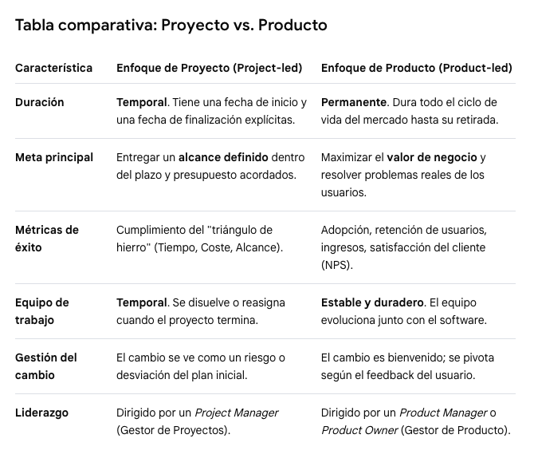
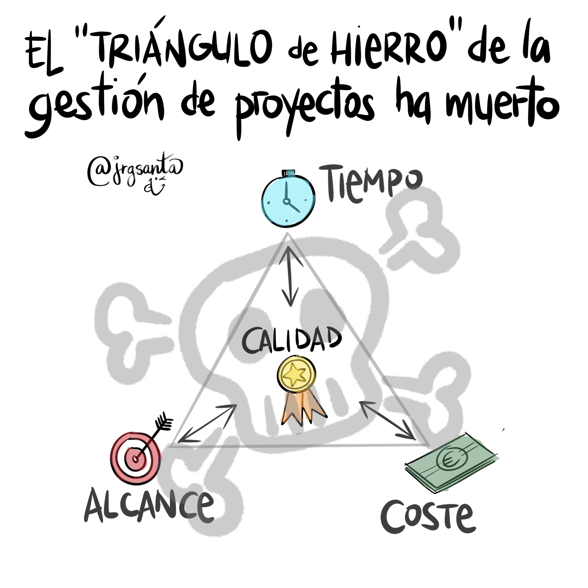
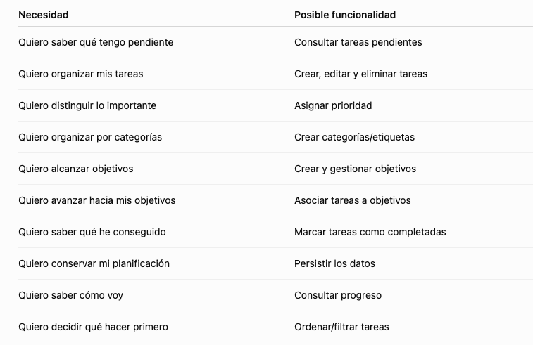
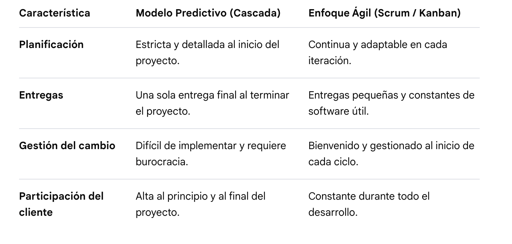
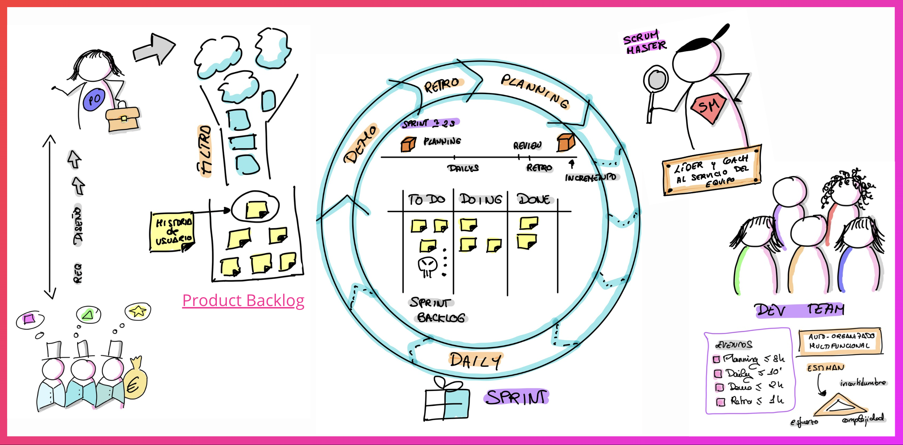
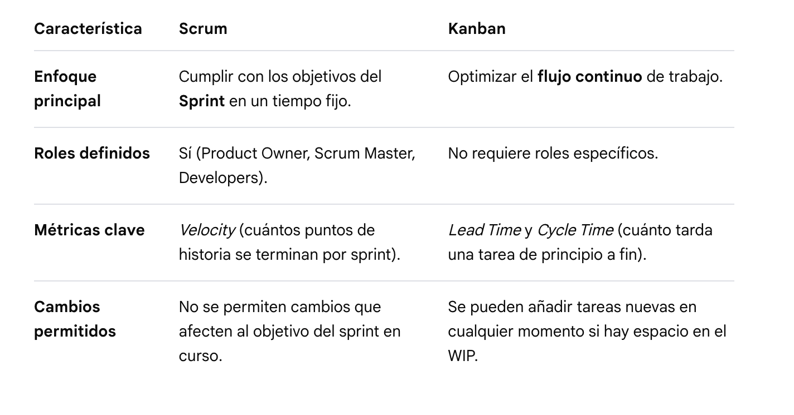
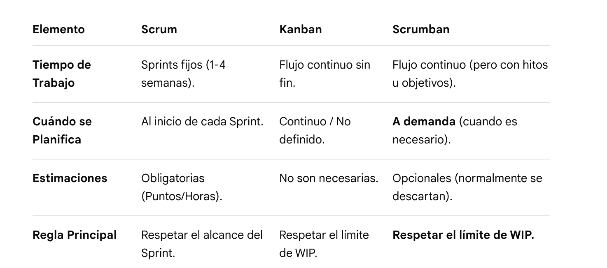

UD1. Gestión de proyectos y metodologías ágiles
📚 Proyecto software
Proyecto vs Producto
En el ámbito del software, la diferencia entre ambos radica en la mentalidad, la duración y la forma en que se mide el éxito. Mientras que un proyecto es un esfuerzo temporal con un principio y un fin claros, un producto es una entidad viva que evoluciona continuamente para generar valor a largo plazo mientras siga siendo útil para sus usuarios.
Un proyecto sirve para construir o actualizar un producto.

Objetivos de un proyecto web
Son los resultados medibles que se esperan conseguir con la creación de la web. Responden a ¿para qué? del proyecto.
Ejemplo: Lograr 1.000 ventas mensuales en la nueva tienda online durante el primer trimestre o reducir un 30% las llamadas de soporte mediante una sección de ayuda autogestionable.
Alcance
Es el límite del proyecto; define detalladamente todo el trabajo que se va a realizar y, de igual importancia, lo que queda fuera.
Ejemplo: El alcance incluye el diseño de 5 páginas, pasarela de pago con tarjeta y un blog. No incluye el desarrollo de una app móvil ni la redacción de los textos legales.
Entregables
Son los productos tangibles o verificables que se van generando y presentando a lo largo del proyecto.
Ejemplo: El documento de arquitectura de información, los wireframes (bocetos de diseño), el código fuente en GitHub, y finalmente, la web publicada y funcional.
Restricciones
Son las limitaciones o factores restrictivos que condicionan la ejecución del proyecto. Tradicionalmente forman el “triángulo de hierro” aunque ahora ante la IA hay quien piensa que ya no se cumple del mismo modo.

Ejemplo: El presupuesto máximo es de 15.000 €, la fecha de lanzamiento límite es el 15 de diciembre, o la obligación de usar obligatoriamente la tecnología Angular / React.
Stakeholders
Son todas las personas, equipos u organizaciones que se ven afectadas por el proyecto o que tienen interés en su resultado.
Ejemplo: El cliente (dueño del negocio), el diseñador UI/UX, el equipo de programadores, el especialista en SEO, e incluso los usuarios finales que navegarán por la web.
Ciclo de vida de un proyecto web
El ciclo de vida abarca desde que la web es solo una idea hasta que se lanza a internet. Se compone de 6 fases secuenciales (aunque en entornos ágiles se puede iterar continuamente entre ellas):
- Inicio → 2. Planificación → 3. Diseño → 4. Desarrollo → 5. Pruebas → 6. Lanzamiento
1. Inicio (briefing y viabilidad)
Se define la idea general, se identifican los principales stakeholders y se alinean las expectativas. Se aprueba la viabilidad del proyecto mediante un acta de constitución (Project Charter).
2. Planificación (definición y estructura)
Se detalla el alcance, el calendario (cronograma) y el presupuesto. Aquí se crea el mapa del sitio web (sitemap) y la arquitectura de la información para saber qué páginas tendrá el sitio y cómo se conectarán.
3. Diseño (UI/UX)
Se define el aspecto visual de la web. Se crean los wireframes (esquemas en blanco y negro) y posteriormente los prototipos interactivos en alta fidelidad (en herramientas como Figma). Se valida la experiencia de usuario (UX) y la interfaz visual (UI).
4. Desarrollo (Programación)
Los desarrolladores traducen los diseños aprobados en código real.
- Front-end: La parte visual con la que interactúa el usuario (HTML, CSS, JavaScript).
- Back-end: La lógica interna, bases de datos, integraciones con pasarelas de pago y el panel de administración (CMS).
5. Pruebas (QA/Quality Assurance)
Se testea a fondo la web antes de hacerla pública. Se comprueba que funcione bien en móviles y ordenadores (responsivo), que no haya enlaces rotos, que la velocidad de carga sea óptima y que los formularios envíen la información correctamente.
6. Lanzamiento y cierre
La web se traslada al servidor definitivo, se vincula el dominio (ej. tuweb.com) y se indexa en Google. Se entrega la documentación al cliente, se realiza la formación si la requiere y se cierra formalmente el proyecto. (A partir de aquí, la web entra en su fase de mantenimiento y evoluciona como producto).
🛷 De la necesidad al requisito
Conceptos clave
Necesidad
La carencia u oportunidad real del usuario o del negocio (por ejemplo: “los clientes necesitan comprar productos sin llamar por teléfono”).
Requisito funcional / no funcional
Requisito funcional: Lo que la aplicación hace (por ejemplo: “el sistema debe permitir pagar con tarjeta de crédito”).
Requisito no funcional: Cómo se comporta la aplicación en términos de calidad (por ejemplo: “la página debe cargar en menos de 2 segundos” o “los datos deben estar cifrados”).
Alcance
Los límites del proyecto; define exactamente qué se incluye y qué se deja fuera para evitar retrasos.
Épicas
Grandes bloques de trabajo o funcionalidades generales que se dividen en partes más pequeñas (por ejemplo: “Módulo de autenticación de usuarios”)
Historias de usuario
Pequeñas piezas de valor contadas desde la perspectiva del usuario, usando el formato:
“Como [rol], quiero [acción] para [beneficio]”.
Criterios de aceptación
Las condiciones específicas que debe cumplir una historia de usuario para darse por buena y terminada (por ejemplo: “el botón de registro se desactiva si el correo es inválido”)
Del problema a las necesidades
Imaginemos que tengo: “Quiero saber qué tengo pendiente”
Todavía no sabemos qué debe hacer la aplicación exactamebnte, pero sí sabemos que hay una necesidad de organizar tareas y consultar progreso.
Necesidad -> Funcionalidad
Ejemplo:

Una necesidad puede dar lugar a varias funcionalidades, y una funcionalidad puede cubrir varias necesidades.
Por ejemplo:
Necesidad: “Quiero organizar mis tareas”
Puede convertirse en:
- crear tarea
- editar tarea
- eliminar tarea
- completar tarea
- asignar prioridad
- asignar categoría
- establecer fecha límite
Funcionalidades -> épicas
Ahora podemos agruparlas.
Podríamos tener algo así (recuerda que son sólo ejemplos):
📝 Épica 1 — Gestión de tareas
Todo lo relacionado con crear y gestionar tareas.
- Crear tarea
- Editar tarea
- Eliminar tarea
- Completar tarea
- Establecer fecha
- Establecer prioridad
Historias de usuario
Vamos a pasar de:
“Crear tarea”
a algo que tenga sentido desde la perspectiva del usuario.
Historia => Como usuario, quiero establecer crear una tarea para registrar algo que necesito realizar
Otro ejemplo:
Historia => Como usuario, quiero asignar una prioridad a una tarea para identificar cuáles requieren mayor atención
…
Ejemplo completo
Problema
Tengo muchas cosas que hacer y me cuesta organizarme.
↓
Necesidad
Necesito registrar y organizar mis tareas.
↓
Funcionalidades
- Crear tareas.
- Editar tareas.
- Eliminar tareas.
- Completar tareas.
- Establecer prioridad.
- Establecer fecha límite.
↓
Épica
Gestión de tareas
↓
Historia
Como usuario, quiero crear una tarea para registrar una actividad que necesito realizar.
↓
Criterios de aceptación
- La tarea debe tener un título.
- El usuario puede crear la tarea desde la interfaz.
- Una vez creada aparece en la lista de tareas.
- La nueva tarea comienza como pendiente.
- El sistema no permite crear una tarea sin título.
↓
Tareas técnicas
Aquí sí pueden aparecer cosas como:
- Crear formulario.
- Validar campos.
- Crear objeto task.
- Añadir tarea al array.
- Renderizar tarea.
- …
La historia describe QUÉ necesita el usuario. Las tareas describen CÓMO lo vamos a implementar
Requisitos no funcionales
Requisitos funcionales
El usuario podrá crear tareas
El usuario podrá asociar una tarea a un objetivo
Requisitos no funcionales
La aplicación deberá funcionar correctamente en los navegadores modernos definidos para el proyecto
Los datos deberán mantenerse al recargar la página
La interfaz deberá ser usable desde dispositivos móviles
La aplicación deberá cumplir los criterios de accesibilidad establecidos para el proyecto
“Hacer una aplicación” no significa solamente implementar funcionalidades
❔ ¿Cómo gestionamos el proyecto?
Modelo predictivo/tradicional
Un modelo predictivo o tradicional es un enfoque de trabajo secuencial donde se planifica todo el proyecto en detalle antes de comenzar la fase de desarrollo.
También se le conoce como modelo en cascada o Waterfall. Su nombre se debe a que el objetivo principal es predecir y controlar de antemano el alcance, el tiempo y los costos.
Características principales
• Fases secuenciales: El proyecto avanza por etapas cerradas y ordenadas (por ejemplo: análisis, diseño, codificación, pruebas y despliegue). No se pasa a la siguiente fase sin terminar la anterior. • Requisitos estables: Se ASUME que los requerimientos del cliente están claros desde el primer día y que cambiarán muy poco durante el proceso. • Entregas al final: El cliente no ve el software funcionando hasta que concluyen todas las fases del ciclo. • Control de cambios rígido: Cualquier modificación posterior en lo que el cliente pidió afecta directamente al tiempo y al presupuesto acordados.
Cuándo es útil este modelo
• Cuando los requisitos del sistema son fijos, muy conocidos y es poco probable que sufran modificaciones. • Cuando se cuenta con una documentación muy detallada y un equipo que domina por completo la tecnología. • En proyectos donde un error posterior cuesta demasiado dinero o afecta a normativas legales estrictas (como sistemas de aviación o dispositivos médicos).
Enfoques ágiles. Manifiesto ágil
En la gestión de proyectos de software, los enfoques ágiles son metodologías basadas en el desarrollo iterativo e incremental, diseñadas para responder rápidamente a los cambios del mercado y a los requisitos del cliente.
A diferencia del modelo predictivo (donde todo se planifica al inicio), en la agilidad el software se construye en pequeños bloques o ciclos de trabajo (llamados sprints o iteraciones) que entregan valor funcional de forma continua.
El origen de estos enfoques se formalizó en el Manifiesto Ágil (Agile Manifesto), un documento redactado en 2001 por 17 expertos en software en Utah, EE. UU., para contrarrestar la rigidez de los modelos tradicionales.
Los cuatro valores del Manifiesto Ágil
El manifiesto no propone reglas rígidas, sino una mentalidad basada en cuatro pilares fundamentales:
• Individuos e interacciones por encima de procesos y herramientas. El talento y la comunicación del equipo importan más que seguir un manual estricto.
• Software funcionando por encima de documentación exhaustiva. Es más valioso entregar un producto que sirva a redactar cientos de páginas de manuales que nadie leerá.
• Colaboración con el cliente por encima de negociación contractual. El cliente es un socio que participa activamente en el día a día, no alguien con quien solo se habla de contratos.
• Respuesta ante el cambio por encima de seguir un plan. El cambio se acepta como una ventaja competitiva en lugar de verse como un obstáculo.
Diferencias clave: Predictivo vs Agile

Scrum. Kanban.
Scrum y Kanban son los dos marcos de trabajo (frameworks) ágiles más utilizados en el desarrollo de software. Ambos sirven para implementar los valores del Manifiesto Ágil, pero lo hacen con filosofías y reglas operativas muy diferentes.
Scrum: ritmo y roles estrictos.
Scrum es un marco estructurado y basado en el tiempo. Divide el trabajo en ciclos fijos llamados Sprints (que duran entre 1 y 4 semanas). Al final de cada sprint, el equipo debe entregar una versión del software que funcione.
- Roles clave:
- Product Owner (Dueño del Producto): Define qué se debe construir y prioriza la lista de tareas (Product Backlog).
- Scrum Master: Facilita el proceso, elimina los obstáculos del equipo y asegura que se sigan las prácticas de Scrum.
- Developers (Equipo de Desarrollo): Las personas que construyen técnicamente el producto.
- Eventos/Reuniones: Cada sprint tiene 4 eventos obligatorios:
- la Planning (planificación),
- la Daily (sincronización diaria de 15 minutos),
- la Review (demostración del software al cliente) y
- la Retrospective (análisis interno para mejorar).

Kanban: flujo continuo y visual
Kanban es un método flexible y enfocado en el flujo continuo. No utiliza cajones de tiempo fijos (sprints), sino que el trabajo fluye constantemente a través de un tablero visual. Su objetivo es optimizar la velocidad con la que las tareas pasan del inicio al final.
• El Tablero Kanban: Se divide en columnas que representan los estados del trabajo (por ejemplo: Por hacer, En desarrollo, En pruebas, Listo). Las tareas se mueven de izquierda a derecha. • Límites de WIP (Work in Progress): Es la regla de oro de Kanban. Se restringe el número máximo de tareas que pueden estar en una columna a la vez. Esto evita que el equipo se sature y ayuda a detectar cuellos de botella de inmediato. • Roles y Reuniones: No impone roles fijos ni reuniones obligatorias. Se adapta a la estructura que el equipo ya tenga.
Scrum vs Kanban

Enfoque híbrido
Scrumban es, en esencia, un enfoque híbrido pero dentro del propio mundo ágil. Nació originalmente como una estrategia de transición para ayudar a los equipos a pasar de Scrum a Kanban, pero demostró ser tan eficiente que se convirtió en un marco de trabajo propio.
Combina la estructura y las reuniones de Scrum con la flexibilidad y el flujo continuo de Kanban, tomando lo mejor de ambos mundos.
Mecánica de Scrumban
En lugar de elegir entre la rigidez de los Sprints o la total apertura de Kanban, Scrumban establece un término medio muy inteligente:
• El Tablero con Límites (de Kanban): El equipo visualiza todo su trabajo en columnas y aplica límites de WIP (Trabajo en Progreso). Esto evita la sobrecarga y los cuellos de botella.
• Planificación a Demanda (Pull-based): A diferencia de Scrum, donde te comprometes a un paquete cerrado de tareas durante 2 semanas, en Scrumban se usa el sistema Pull. Cuando la columna de tareas “Por Hacer” se está quedando vacía (llega a un límite mínimo), se convoca una reunión rápida de planificación para rellenarla con prioridades del Backlog.
• Sin Roles Estrictos (de Kanban): No es obligatorio tener un Scrum Master o un Product Owner dedicados en exclusividad, aunque muchos equipos deciden mantenerlos si les funciona.
• Eventos para la Mejora (de Scrum): Se mantienen las reuniones diarias (Daily) para sincronizarse y las Retrospectivas periódicas para analizar cómo mejorar el proceso.
¿Cuándo brilla realmente Scrumban?
Scrumban es la solución ideal para escenarios donde Scrum se siente demasiado rígido y Kanban demasiado caótico. Es perfecto para:
• Proyectos de Mantenimiento y Evolutivos: Equipos que desarrollan nuevas funcionalidades (desarrollo puro) pero que al mismo tiempo deben atender errores urgentes o soporte técnico del día a día.
• Proyectos en Fase de Lanzamiento o Estabilización: Cuando el software ya está en producción y surgen cambios e imprevistos constantemente que no pueden esperar a que termine un Sprint de dos semanas.
• Equipos Saturados por las Reuniones: Equipos que sienten que pierden demasiado tiempo estimando tareas en puntos de historia (Story Points) o planificando Sprints que luego nunca se cumplen por culpa de las interrupciones del negocio.
